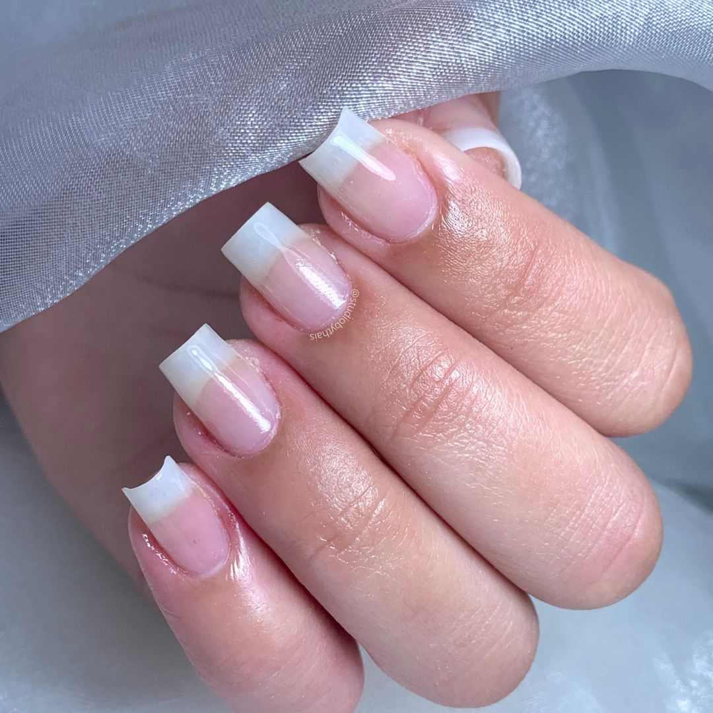
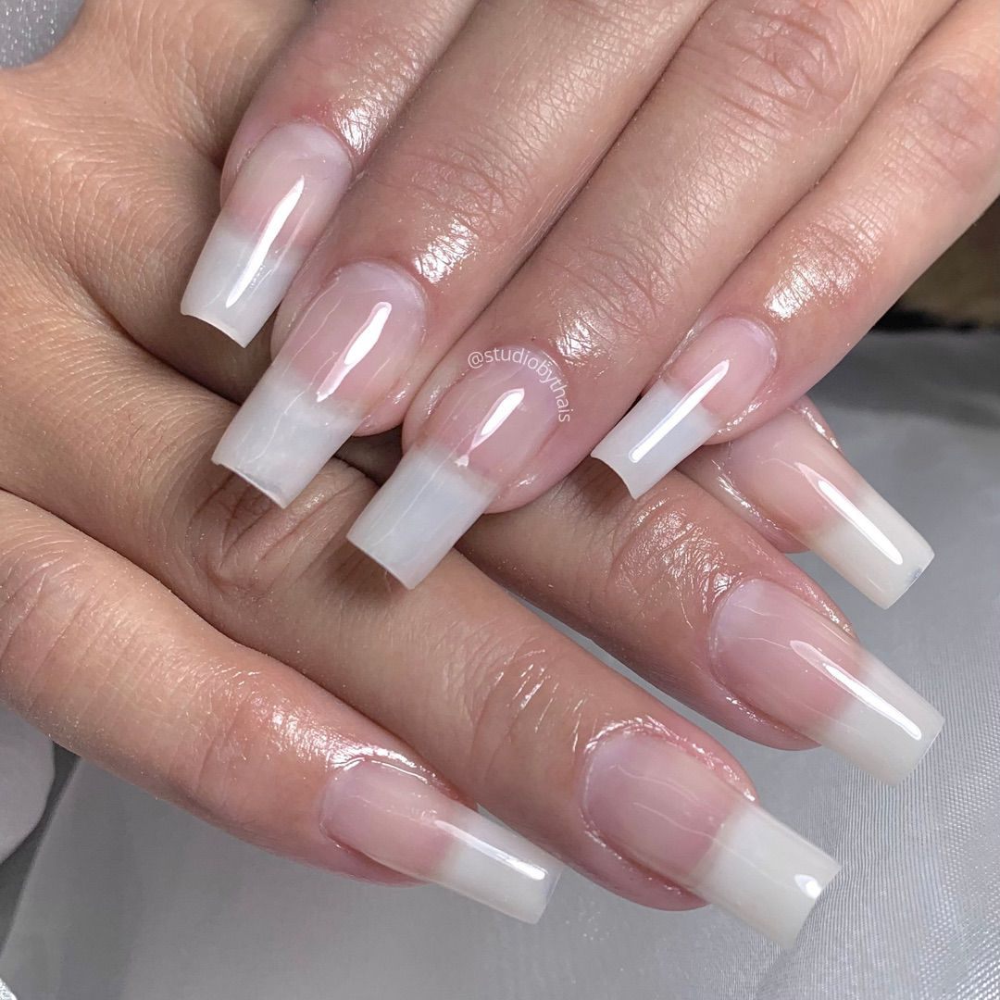
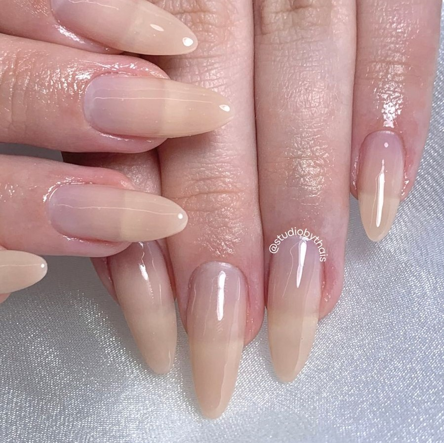
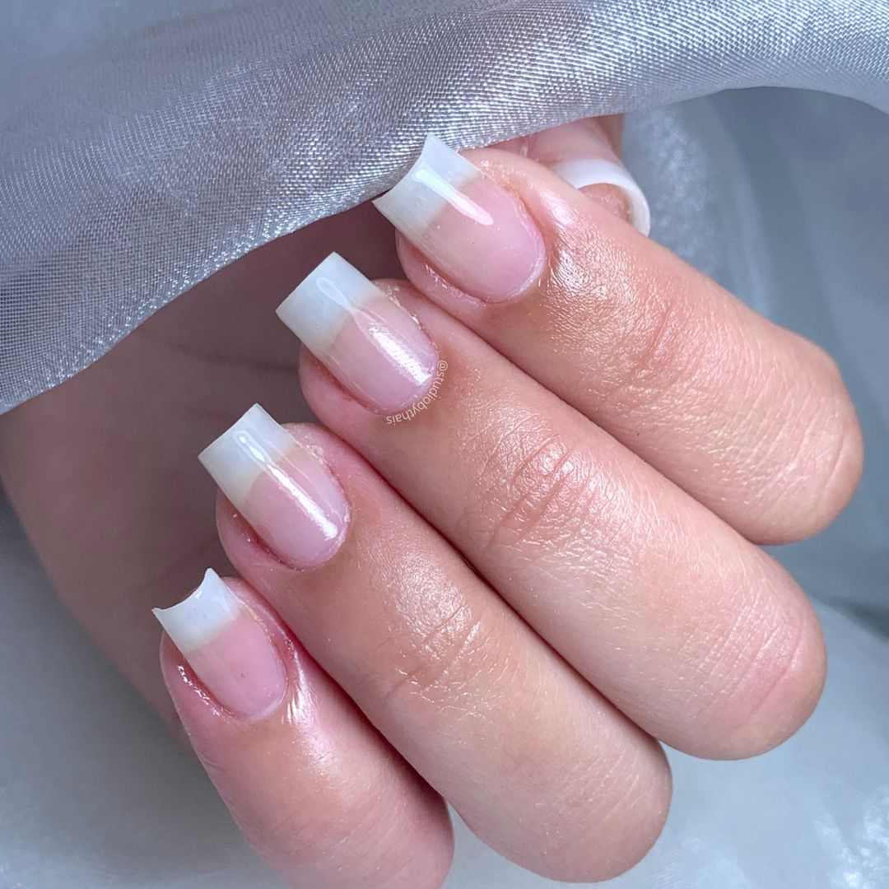
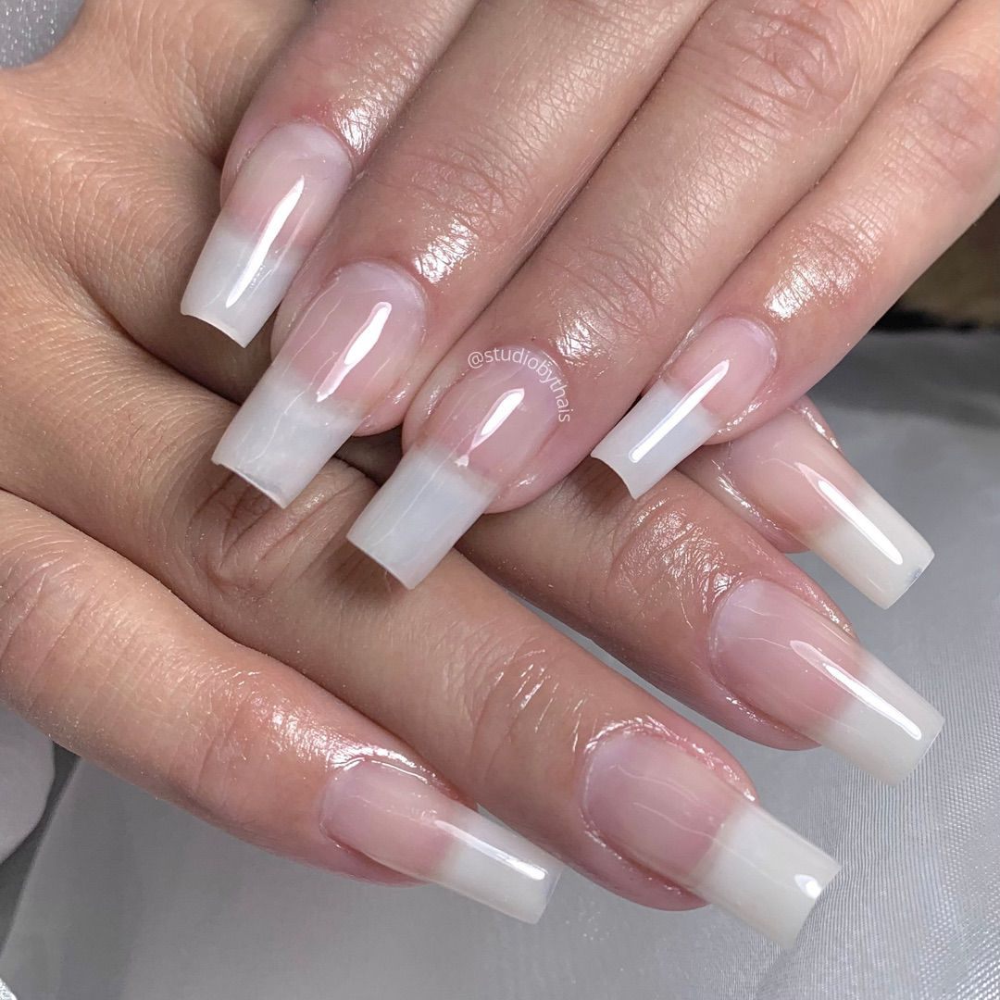
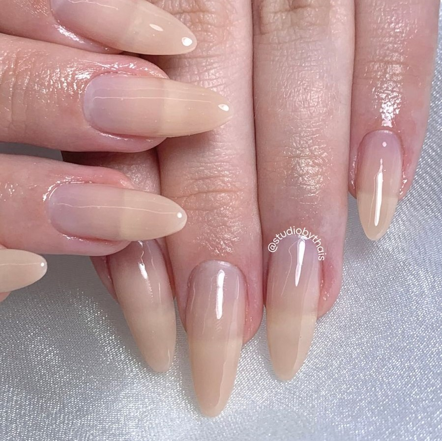

- Alongamentos
- Manicure
- Esmaltação em Gel
- Regras
- Cuidados
- Meu Curso

 





Minha técnica de alongamento em fibra de vidro deixa suas unhas com acabamento natural e fino, sempre utilizando os melhores produtos do mercado.
As unhas são um espelho da personalidade de uma mulher. Elas podem ser transformadas para refletir a sua imagem e transmitir a sua essência.
As unhas podem ser transformadas para transmitir a personalidade de cada mulher. É por isso que busco sempre inovar nos meus serviços de manicure.
Realize as manutenções regularmente (ao menos de 20 em 20 dias) para manter a durabilidade do alongamento e preservação das suas unhas naturais.
Thais Coelho
Nail Designer
Elevando sua autoestima através da naturalidade das unhas.
Endereço: Rua Sergipe nº 1075 - Centro - Avaré SP